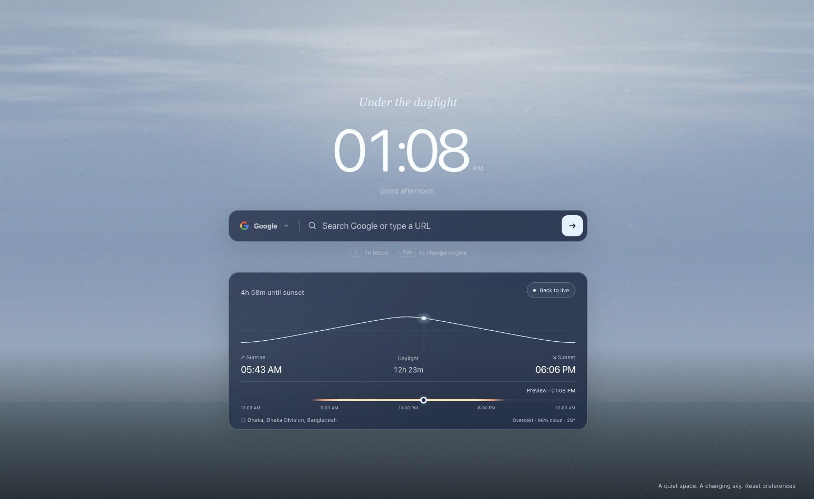
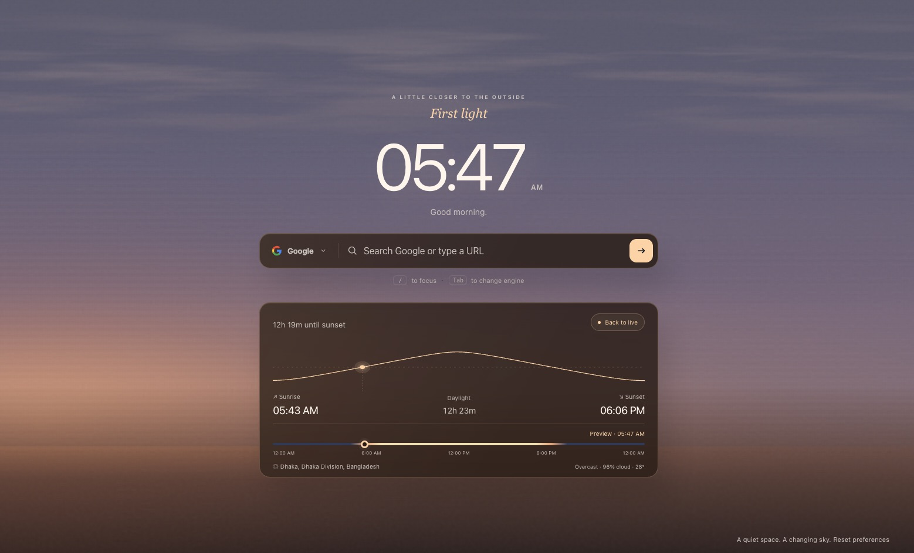
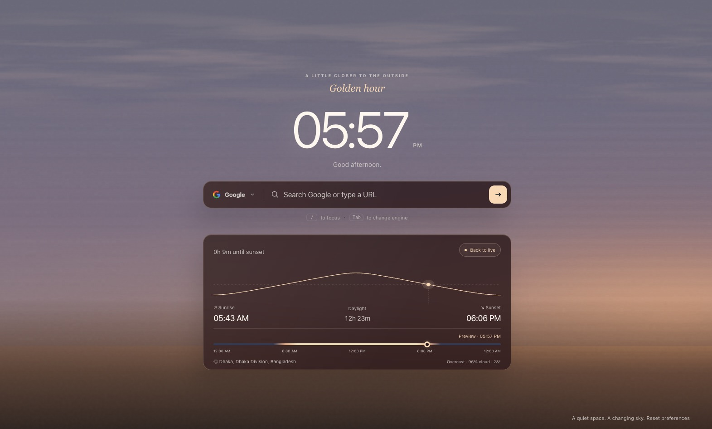
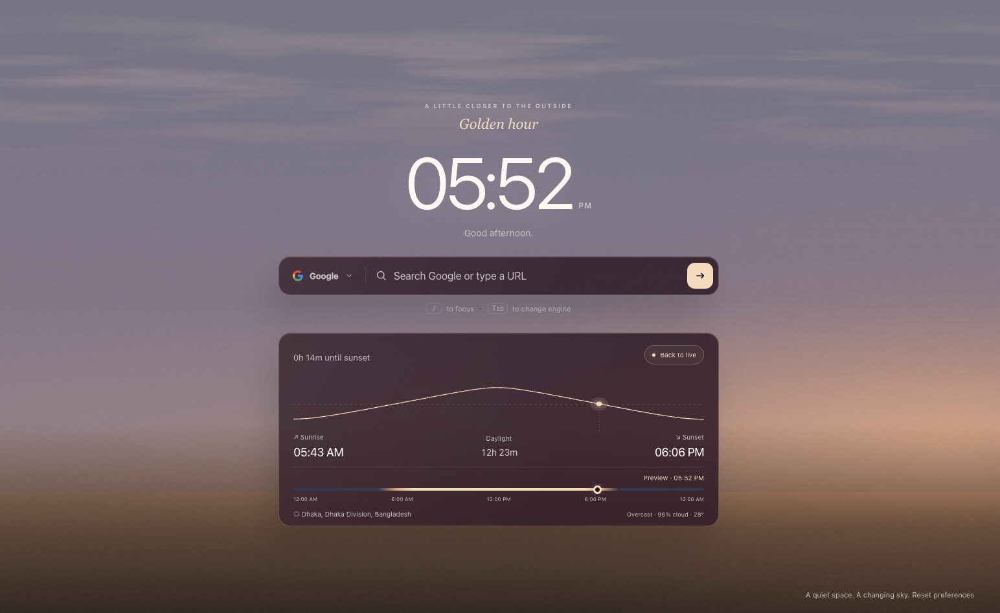
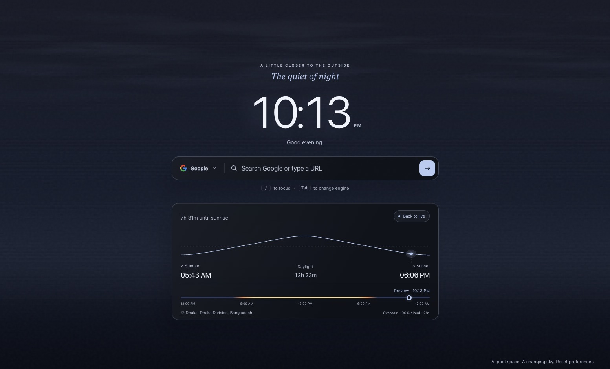

Live Solar Sky
A dynamically rendered sky that follows the real sun's position, with accurate sunrise and sunset colors and smooth transitions throughout the day.
Free & Open Source Chrome Extension
Replace Chrome's cluttered new tab with a live solar sky that follows the real sun — dawn to dusk, every day. With a real-time clock, clean search bar, and zero distractions.

Features
A minimal, purposeful new tab that respects your attention and your privacy.
A dynamically rendered sky that follows the real sun's position, with accurate sunrise and sunset colors and smooth transitions throughout the day.
A large, beautifully readable clock front and center. Toggle between 12-hour and 24-hour formats to match your preference.
Press / to search. Switch between Google, DuckDuckGo, and more with Tab. No clutter, just results.
An interactive altitude chart shows the sun's arc for the day — with sunrise time, sunset time, and total daylight hours at a glance.
Scrub through the day with a timeline slider to preview the sky at any time. Watch dawn break or dusk settle — on demand.
Optional real-time cloud layer drawn from weather data via the Open-Meteo API. See actual cloud cover in your sky.
Search for a city or use device geolocation for accurate sun positioning wherever you are in the world.
No tracking or analytics. City search and optional weather data come directly from Open-Meteo.
Showcase
The extension paints a different sky throughout the day — accurate to your location, beautiful at every hour.




Use Cases
Whether you're a student, remote worker, or privacy advocate — Quiet New Tab fits right in.
Replace the cluttered default new tab with a calming, distraction-free space that gently connects you to the natural rhythm of the day.
Glance at a beautiful, always-accurate clock with a personalized greeting every time you open a new tab.
Stay connected to local sunrise and sunset times wherever you are by searching for a city.
A minimal new tab with just a search bar — no news feeds, no trending articles, no distractions pulling you away from what matters.
Enjoy a live, ever-changing sky that transitions naturally through dawn, daylight, golden hour, dusk, and night — like a window to the outside.
No tracking, no analytics, no data leaves your device. Your location is only used locally for sun calculations — nothing is shared.
Get Started
Get the source from GitHub or download as a ZIP.
Navigate to chrome://extensions and enable Developer mode.
Click Load unpacked and select the project folder.
That's it. Your new tab is now a live solar sky. Enjoy.
FAQ
Quick answers to the most common questions about Quiet New Tab.
Quiet New Tab is a free, open-source Chrome extension that replaces the default new tab page with a calm, minimal interface. It features a live solar sky that tracks the real sun's position throughout the day, a large real-time clock, and a clean search bar — with zero distractions, ads, or news feeds.
Yes, Quiet New Tab is completely free and open source under the MIT License. There are no hidden charges, premium tiers, or in-app purchases. You can download the source code from GitHub, inspect it, and even contribute.
No. Quiet New Tab has no analytics, telemetry, or third-party tracking. City searches and optional cloud requests are sent directly to Open-Meteo; settings are saved in your browser.
Installing Quiet New Tab takes under a minute:
chrome://extensions in Chrome.Yes. The sky is rendered dynamically based on the actual solar position for your selected city or device location. It transitions smoothly through dawn, daytime, golden hour, dusk, and night. You can also use the Time Explorer slider to preview the sky at any time of day.
Absolutely. Quiet New Tab supports both device geolocation and city search. Open the settings panel (⚙️ button), search for a city, and select it to localize the sky.
Quiet New Tab supports multiple search engines including Google, DuckDuckGo, and others. Press / to focus the search bar, type your query, and hit Enter. Press Tab to cycle between available search engines.
Quiet New Tab is currently built as a Chrome extension using Manifest V3. It works on all Chromium-based browsers, including Google Chrome, Microsoft Edge, Brave, and Opera. Firefox support may be added in the future.
When the Live Clouds setting is enabled, Quiet New Tab fetches real-time cloud cover data from the free Open-Meteo API and renders cloud layers on the sky. This gives you a subtle, accurate visual sense of current weather conditions — without needing a separate weather app.
Yes. Quiet New Tab is fully open source and hosted on GitHub. You're free to view, fork, modify, and contribute under the MIT License. Contributions and feedback are welcome.